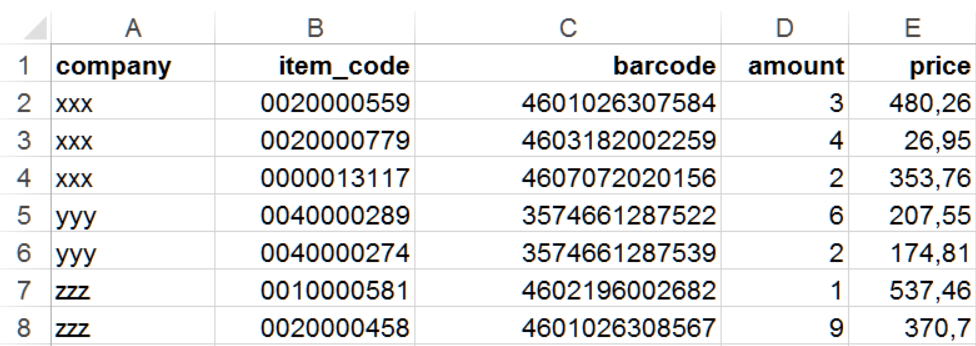
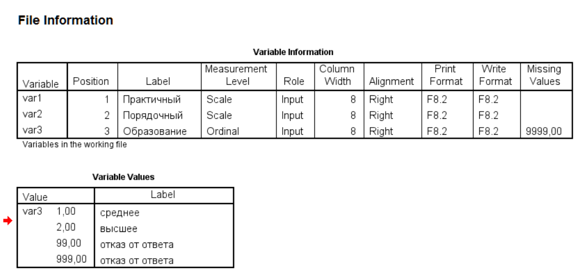

dt + ETL
Разбор домашней работы
level 3 (HMP)
- создайте копию колонки
gender, назовите ееgender_2. Замените в ней всеn/aиhermaphroditeнаother. Посчитайте количество персонажей в зависимости от пола (gender_2):
library(data.table)
sw <- fread('http://bit.ly/39aOUne')
sw[, gender_2 := gender]
sw[gender_2 %in% c('n/a', 'hermaphrodite'), gender_2 := 'other']- выполните предыдущее задание без создания промежуточной колонки
gender_2
# два альтернативных варианта
# sw[gender %in% c('n/a', 'hermaphrodite'), gender := 'other']
sw[, gender := fifelse(gender %in% c('n/a', 'hermaphrodite'), 'other', gender)]level 4 (UV)
сделайте сводную таблицу
planet_charsпо персонажам каждой планеты, где в колонках будет количество персонажей, их средний рост и вес (оригинальный и скорректированный).округлите значения до 1 знака после запятой
Первые 5 строк результата:
sw[, mass_corrected := mass]
sw[, mass_mean := mean(mass, na.rm = TRUE), by = list(planet_name, gender)]
sw[is.na(mass), mass_corrected := mass_mean]
planet_chars <- sw[, list(
n_chars = uniqueN(name), # или n_chars = .N
height_mn = round(mean(height), 1),
mass_mn = round(mean(mass, na.rm = TRUE), 1),
mass_corrected_mn = round(mean(mass_corrected, na.rm = TRUE), 1)
), by = planet_name]
planet_chars[1:5]## planet_name n_chars height_mn mass_mn mass_corrected_mn
## 1: Tatooine 10 169.8 85.4 85.8
## 2: Kamino 3 208.3 83.1 83.1
## 3: Geonosis 1 183.0 80.0 80.0
## 4: Utapau 1 206.0 80.0 80.0
## 5: Kashyyyk 2 231.0 124.0 124.0ETL
Чтение и запись текстовых файлов
В работе аналитики чаще всего сталкиваются с данными, которые хранятся в простом текстовом формате (txt, разделители строк \n, \r или \n\r ) и основанном на них табличных форматах csv (с разделителями , или ;) или tsv (\t).
Построчное чтение
При работе с текстами проще всего читать файлы построчно - весь текст импортируется как вектор строковых значений, а элементы этого вектора - блоки текста, ограниченные переносами строк. Это удобно при импорте текстов, в которых есть смысловые блоки, как в художественных и поэтических текстах. Точно также построчное чтение может быть использовано для импорта файлов с ошибками или даже, в особо экзотических случаях, для чтения скриптов.
Для построчного чтения обычно используется функция readLines() базового пакета или аналогичные ей. С помощью аргументов функции можно указать, сколько необходимо прочитать строк, задать кодировку и что делать, если в файле меньше строк, чем было задано.
Прочитаем первые несколько строк текста песни:
txt_lines <- readLines('./data/oxxy_gorgorod.txt', n = 5)
txt_lines## [1] "####"
## [2] "Незаметно поправь её"
## [3] "Одеяло, за это себя предавая анафеме"
## [4] "Она вышла из пены"
## [5] "Худой отпечаток плеча оставляя на кафеле"Чтение текстовых файлов: read.table() и fread()
Для чтения текстовых файлов, которые содержат в табличном формате, в базовом R есть функция read.table() и функции-обертки, которые обращаются к ней, но с другими значениями аргументов по умолчанию (read.csv(), read.csv2, read.delim(), read.delim2()). Табличный формат предполагает наличие строк и колонок в файле, выделенные разделителями строк и полей соответственно, при этом формат файла может быть как txt, так и csv.
Несмотря на всю видимую простоту, при импорте табличных форматов можно столкнуться с очень большим количеством нетривиальных проблем. В немалой части это можно назвать следствием их широкой распространенности - практически все современные текстовые процессоры умеют работать с csv-файлами, экспорт из баз данных также нередко делается в csv. Ко всему прочему, текстовые форматы хорошо сжимаются при архивации.
К наиболее частым сложностям, которые возникают при импорте текстовых файлов можно отнести следующие:
- неожиданные разделители (например, экспорт из MS Excel в csv создает файл с разделителем
;) - лишние или пропущенные разделители строк или колонок (
\t\tвместо\t), что создает разное количество колонок в таблице - несоответствие файла расширению или вообще отсутствие расширения
- нестандартные кодировки, в том числе проблемы их импорта при работе в Windows
- наличие embedded nuls (
\0) или метки порядка байтов (bite order marks, BOM) - наличие символов
"""",////и прочих технических символов - мета-данные (запись о дате и источнике данных) в первых строках файла
Большинство этих нюансов решается при настройке параметров импорта с помощью аргументов функций импорта (т.е., настройки по умолчанию не справляются). В частности, в функциях чтения таблиц можно задать разделители полей и десятичные разделители (sep и dec), кодировку файла и отображения, обработку пустых строк и т.д. Некоторые проблемы, например, импорт данных с embedded nuls постепенно решаются в новых версиях функций и пакетов. Помимо этих аргументов также очень полезны аргументы, которые позволяют прямо указать, сколько строк импортировать (или пропустить от начала), какие типы данных в колонках и какие колонки стоит пропустить, а также - надо ли конвертировать в факторы строковые значения.
Из других не очень очевидных нюансов стоит отметить, что функция read.table() удобна, так как обладает большим набором аргументов, а также устойчива к некоторым ошибкам в данных. Однако импорт данных с ее помощью весьма нетороплив, что ощутимо сказывается при импорте больших таблиц. Поэтому лучше использовать аналогичные функции других пакетов, в частности, data.table::fread(), аргументы которой очень похожи на аргументы read.table().
Запись данных в текстовые файлы: write.table() и fwrite()
Запись данных в текстовые форматы также может вестись как построчно, так и сразу всей таблицей. Для записи построчно обычно используется функция writeLines().
Запись таблиц происходит аналогичным образом, с помощью функции write.table() или ее аналогом в других пакетах (в частности, более быстрый вариант data.table::fwrite()). С помощью аргументов можно задать как типы разделителей (строк, полей и десятичные разделители), так и кодировку. Обычно рекомендуется выставлять аргумент row.names = FALSE, чтобы в файл не были записаны отдельной колонкой названия (номера) строк.
Чтение файлов MS Excel
В отличие от простых форматов типа .csv, файлы, созданные в MS Excel импортировать не так просто. Ситуация также осложняется тем, что форматы .xls и .xlsx сильно различаются по внутренней структуре. Часть пакетов, которые обеспечивают взаимодействие с Excel-файлами, требуют установки языка Java (java development kit) в систему и соответствующих R-пакетов (rJava, в частности) - самые часто используемые пакеты тут XLconnect и xlsx. Тем не менее, в большинстве случаев необходим только прочитать файл, и тут могут быть полезны пакеты пакеты openxlsx и readxl, не требующие установки jdk. Пакет openxlsx к тому же умеет еще и записывать файлы в .xlsx, как XLconnect, в том числе и с условным форматированием ячеек.
Чтение файлов
Пакет readxl, по наблюдениям, чуть быстрее читает файлы, чем openxlsx или пакеты, требующие Java, поэтому рассмотрим здесь его. В целом, функционал пакетов достаточно схож и то, что может readxl, практически всегда можно реализовать и в других пакетах, и наоборот.
Основные функции пакета - read_xls() для чтения файлов MS Excel, созданных в версиях до MS Excel 2007, read_xlsx() - для чтения файлов, созданных в более современных версиях, также есть обобщающая функция read_excel(), которая по расширению файла определяет, какую из этих функций надо использовать. Пакет readxl принадлежит к экосистеме tideverse, поэтому импортированные таблицы имеют класс tibble и data.frame. Соответственно, если работать в data.table, необходимо их отдельно преобразовать
Вот так выглядит исходный файл в MS Excel: 
Импортируем файл:
library(readxl)
# читаем файл
path <- './data/xls_example.xlsx'
xlsx_data <- read_xlsx(path)
str(xlsx_data)## tibble [7 × 5] (S3: tbl_df/tbl/data.frame)
## $ company : chr [1:7] "xxx" "xxx" "xxx" "yyy" ...
## $ item_code: num [1:7] 20000559 20000779 13117 40000289 40000274 ...
## $ barcode : num [1:7] 4.60e+12 4.60e+12 4.61e+12 3.57e+12 3.57e+12 ...
## $ amount : num [1:7] 3 4 2 6 2 1 9
## $ price : num [1:7] 480.3 26.9 353.8 207.6 174.8 ...xlsx_data## # A tibble: 7 × 5
## company item_code barcode amount price
## <chr> <dbl> <dbl> <dbl> <dbl>
## 1 xxx 20000559 4601026307584 3 480.
## 2 xxx 20000779 4603182002259 4 27.0
## 3 xxx 13117 4607072020156 2 354.
## 4 yyy 40000289 3574661287522 6 208.
## 5 yyy 40000274 3574661287539 2 175.
## 6 zzz 10000581 4602196002682 1 537.
## 7 zzz 20000458 4601026308567 9 371.При импорте можно указать тип колонок. Делается это с помощью аргумента col_types, в который необходимо передать вектор такой же длины, сколько колонок, состоящий из значений logical, numeric, date, text или list. К сожалению, в отличие от схожего аргумента colClasses в функциях импорта csv/xlsx-файлов (read.table(), read.csv(), data.table::fread(), openxlsx::read.xlsx и проч.), в readxl названия типов не соответствуют названиям атомарных типов данных в R.
Если для col_types указать NULL или guess, то тип будет выбран на основе анализа минимум 1000 строк (или всех строк, если датасет меньше 1000 строк). Также можно указать вектор типов длиной не по количеству колонок, а только из одного значения, то все колонки будут импортированы в этом типе. Значение skip указывает, что эту колонку не надо импортировать.
# читаем файл с указанием типа text для всех колонок
xlsx_data <- read_xlsx(path, col_types = 'text')
xlsx_data## # A tibble: 7 × 5
## company item_code barcode amount price
## <chr> <chr> <chr> <chr> <chr>
## 1 xxx 20000559 4601026307584 3 480.26
## 2 xxx 20000779 4603182002259 4 26.95
## 3 xxx 13117 4607072020156 2 353.76
## 4 yyy 40000289 3574661287522 6 207.55
## 5 yyy 40000274 3574661287539 2 174.81
## 6 zzz 10000581 4602196002682 1 537.46
## 7 zzz 20000458 4601026308567 9 370.7Частичное чтение файла
Большинство xlsx-файлов содержит несколько непустых листов. По умолчанию функции импорта читают только первый лист, остальные же игнорируются. Пакеты типа XLConnect могут читать весь файл в отдельный объект. Для чтения названий листов xlsx-файла можно воспользоваться функцией readxl::excel_sheets() и полученный вектор потом циклом или через lapply() передать в функцию импорта:
# читаем список листов файла
sheets <- readxl::excel_sheets(path)
sheets## [1] "Sheet1" "Sheet2"# читаем все листы в список и смотрим структуру
file_str <- lapply(sheets, function(x) read_xlsx(path, sheet = x))
str(file_str)## List of 2
## $ : tibble [7 × 5] (S3: tbl_df/tbl/data.frame)
## ..$ company : chr [1:7] "xxx" "xxx" "xxx" "yyy" ...
## ..$ item_code: num [1:7] 20000559 20000779 13117 40000289 40000274 ...
## ..$ barcode : num [1:7] 4.60e+12 4.60e+12 4.61e+12 3.57e+12 3.57e+12 ...
## ..$ amount : num [1:7] 3 4 2 6 2 1 9
## ..$ price : num [1:7] 480.3 26.9 353.8 207.6 174.8 ...
## $ : tibble [3 × 2] (S3: tbl_df/tbl/data.frame)
## ..$ company: chr [1:3] "xxx" "yyy" "zzz"
## ..$ items : num [1:3] 198 256 32В некоторых случаях требуется импортировать только определенный диапазон ячеек со всего листа - например, когда на созданном вручную листе есть и таблица с данными, и графики, и дополнительные материалы. Для чтения определенной ячейки или диапазона ячеек используют аргумент range, в котором в строковом виде указывают диапазон ячеек в Excel-координатах (буквы для колонок и цифры для строк). К сожалению, на данный момент нельзя указать сразу несколько диапазонов. Во-вторых, в прочитанном диапазоне, если не указать обратное, первая строка будет по умолчанию интерпретироваться как строка заголовка. В результате приходится либо прямо задавать названия колонок, либо указывать, что заголовка нет:
read_xlsx(path, range = 'A5:B6', col_names = c('company', 'item_code'))## # A tibble: 2 × 2
## company item_code
## <chr> <dbl>
## 1 yyy 40000289
## 2 yyy 40000274Чтение файлов SPSS
Для импорта файлов SPSS (.sav) обычно используют функции какого-либо из двух пакетов - foreign::read.spss(), который идет в базовом наборе пакетов R, а так же haven::read_spss(), авторства Хэдли Викхэма.
Исходный файл имеет такую структуру (скриншот из SPSS Output): 
Функции read_sav() и read_spss() пакета haven обладают схожим с foreign::read.spss() функционалом при меньшем количестве настроек. При этом эти функции несколько быстрее, а так же не имеют проблем с длинными строками. В результате импорта получается tibble-таблица (так как haven принадлежит экосистеме tidyverse).
library(haven)
spss_data <- read_sav('./data/spss_example.sav')
spss_data## # A tibble: 6 × 3
## var1 var2 var3
## <dbl> <dbl> <dbl+lbl>
## 1 3 4 1 [среднее]
## 2 4 5 NA
## 3 3 5 99 [отказ от ответа]
## 4 3 5 1 [среднее]
## 5 4 4 4
## 6 3 5 999 [отказ от ответа]Функция не имеет настроек, как импортировать значения, для которых заданы метки, и в таблице представлены числовые значения. При необходимости получить значения метки переменных или значений необходимо идти в атрибуты колонок таблицы:
str(spss_data)## tibble [6 × 3] (S3: tbl_df/tbl/data.frame)
## $ var1: num [1:6] 3 4 3 3 4 3
## ..- attr(*, "label")= chr "Практичный"
## ..- attr(*, "format.spss")= chr "F8.2"
## $ var2: num [1:6] 4 5 5 5 4 5
## ..- attr(*, "label")= chr "Порядочный"
## ..- attr(*, "format.spss")= chr "F8.2"
## $ var3: dbl+lbl [1:6] 1, NA, 99, 1, 4, 999
## ..@ label : chr "Образование"
## ..@ format.spss: chr "F8.2"
## ..@ labels : Named num [1:4] 1 2 99 999
## .. ..- attr(*, "names")= chr [1:4] "среднее" "высшее" "отказ от ответа" "отказ от ответа"Пакет haven импортирует данные в свой формат, однако полученный объект можно преобразовать в data.table:
library(data.table)
setDT(spss_data)
class(spss_data)## [1] "data.table" "data.frame"У нас есть колонка var3, для которой в SPSS были заданы метки. В полученном формате метки хранятся в атрибутах колонки — это что-то вроде мета-информации. Посмотрим все атрибуты колонки с помощью функции attributes() (иногда это проще делать через синтаксис списков и оператор $):
# смотрим атрибуты вектора-колонки var3
attributes(spss_data[, var3])## $label
## [1] "Образование"
##
## $format.spss
## [1] "F8.2"
##
## $class
## [1] "haven_labelled" "vctrs_vctr" "double"
##
## $labels
## среднее высшее отказ от ответа отказ от ответа
## 1 2 99 999# через синтаксис списков
attributes(spss_data$var3)## $label
## [1] "Образование"
##
## $format.spss
## [1] "F8.2"
##
## $class
## [1] "haven_labelled" "vctrs_vctr" "double"
##
## $labels
## среднее высшее отказ от ответа отказ от ответа
## 1 2 99 999Мы видим четыре атрибута — метку переменной ($label), SPSS-формат данных ($format.spss), обозначение, что переменная в SPSS имеет метки значений ($class) и собственно вектор меток, которые используются для значений этой колонки ($labels).
Для того, чтобы сохранить метки значений (а не сами значения), можно создать новую колонку и в нее записать с результат применения функции as_factor пакета haven — эта функция извлекает и сопоставляет значения и их метки.
spss_data[, var4 := as_factor(var3)]
spss_data## var1 var2 var3 var4
## 1: 3 4 1 среднее
## 2: 4 5 NA <NA>
## 3: 3 5 99 отказ от ответа
## 4: 3 5 1 среднее
## 5: 4 4 4 4
## 6: 3 5 999 отказ от ответаКак мы видим, для значений 1, 99, 999 были проставлены метки, и они оказались в новой переменной, а не атрибутом. Для значения 4 метки не было, поэтому оно было записано именно значением.
Дополнительная литература
- глава моего учебника по R, где разбираются процессы ввода/вывода данных.
Домашнее задание
level 1 (IATYTD)
У вас есть xlsx-файл по популяции и видам пингвинов.
Импортируйте данные из этого файла в R. При работе постарайтесь обойтись только средствами R, не открывая файл в Excel.
Проверьте, что вы импортировали все листы. При необходимости, импортируйте оставшиеся и соберите все в одну таблицу.
Проверьте класс объекта и при необходимости преобразуйте в data.table.
Посчитайте количество пингвинов каждого типа (колонка Species).
## Species N
## 1: Adelie Penguin (Pygoscelis adeliae) 152
## 2: Gentoo penguin (Pygoscelis papua) 124
## 3: Chinstrap penguin (Pygoscelis antarctica) 68level 2 (HNTR)
- У вас есть данные Tate Gallery по художникам и их произведениям. Импортируйте датасеты по художникам, ссылки на файлы ниже. А лучше воспользуйтесь функцией
download.file()(не забудьте прочитать справку по функции и ее аргументам) для того, чтобы сохранить эти файлы на диск и потом загружать их уже с диска, а не из интернета.
url_artwork <- 'https://raw.githubusercontent.com/rfordatascience/tidytuesday/master/data/2021/2021-01-12/artwork.csv'
url_artists <- "https://github.com/tategallery/collection/raw/master/artist_data.csv"С помощью функции
setnames()пакета data.table (илиnames()из базового пакета, если вам так удобнее) переименуйте в файле по художникам колонкиyearOfBirthвyear_of_birth, колонкиyearOFDeath,placeOfBirthиplaceOfDeathаналогично.посчитайте, сколько художников из списка живы в настоящий момент.
посчитайте, сколько среди живущих в настоящий момент художников мужчин и сколько женщин.
## [1] 1304## gender N
## 1: Female 297
## 2: Male 944
## 3: 63level 3 (HMP)
подумайте и покажите решение, как можно узнать структуру файла
artwork, однако полностью импортировать вы его не можете (предположим, что он настолько большой, что повесит систему намертво).импортируйте только те колонки, которые позволят вам идентифицировать художника, название работы и ее формат (колонка
medium).посчитайте, сколько в галерее работ от художников-мужчин и сколько от женщин. Отдельной колонкой выведите статистики по живущим на данный момент художникам.
## gender n_works n_works_alive
## 1: Male 2791 878
## 2: 49 28
## 3: Female 492 274
## 4: <NA> 4 4- посчитайте, сколько работ разных форматов сделали художницы, умершие до 1800 года (каждый формат – отдельная колонка, форматы даны в колонке
medium). Вам потребуется функцияdcast().
## artist Graphite and ink on paper Oil paint on canvas
## 1: Beale, Mary 0 1
## 2: Sanders, Ann 0 0
## 3: Spencer, Lady 1 0
## Oil paint on paper Watercolour on paper
## 1: 2 0
## 2: 0 1
## 3: 0 0level 4 (UV)
Импортируйте файл txt_example.txt. Перед импортом можете скачать файл и импортировать его локально (это рекомендация, не более).
## КодПодр КодНом
## 1 69500044 ЛН-008560521
## 2 69500044 ЛН-745621
## 3 69500300 69506432458
## 4 69500346 695089466518
## 5 69500268 69504851543
## 6 69500009 69506584554
## 7 69500058 ЛН-86600383
## 8 69500147 ЛН-41200521
## 9 69500147 ЛН-05860521
## 10 69500268 ЛН-00000927
## Наименование
## 1 БАНЕОЦИН ПОР. 10Г
## 2 БАНЕОЦИН ПОР. 10Г
## 3 НИМЕСАН ТАБЛ. 100МГ N20
## 4 ЦИННАРИЗИН ТАБЛ. 25МГ N50 АВЕКСИМА
## 5 ФИТОСЕДАН СБОР УСПОКОИТЕЛЬНЫЙ №2 Ф/П 2Г N20 КРАСНОГОРСК
## 6 БАНДАЖ КОМПРЕС. ПОДДЕРЖИВ. ПОЯСНИЧНО-КРЕСТЦОВЫЙ С ОВЕЧЬИМ МЕХОМ БКД-УНГА, р.6
## 7 АЛЛОХОЛ ТАБЛ.П.О. N10 ФАРМСТАНДАРТ
## 8 БАНЕОЦИН ПОР. 10Г
## 9 БАНЕОЦИН ПОР. 10Г
## 10 КВАМАТЕЛ ТАБЛ.П.О. 20МГ N28
## Производитель Упак Месяц
## 1 САНДОЗ ГмбХ - Австрия 4 5
## 2 САНДОЗ ГмбХ - Австрия 4 5
## 3 Шрея Лайф Саенсиз Пвт. Лтд 1 5
## 4 Анжеро-Судженский ХФЗ,ООО 3 5
## 5 КРАСНОГОРСКЛЕКСР-ВА 1 5
## 6 ТОНУС - ЭЛАСТ 1 5
## 7 ФАРМСТАНДАРТ 10 5
## 8 САНДОЗ ГмбХ - Австрия 4 5
## 9 САНДОЗ ГмбХ - Австрия 4 5
## 10 Гедеон Рихтер 2 5level 5 (N)
Импортируйте файл extr’version.xls. Решение должно уметь импортировать не только этот конкретный файл, но и другие файлы с такими особенностями. Перед импортом надо скачать файл и импортировать его локально (read_excel не умеет импортировать по ссылке).
print(x)## Название товара
## 1: Солпадеин, тбл №12
## 2: Соль д/ванн "Доктор Сольморей" с эвкалипт. пакет 500мг
## 3: Соль д/ванн 500г Противопростудная эвкалипт
## 4: Соль д/ванн Elite с пеной , 500г морская
## 5: Соль д/ванн Elite, 500г ромашка
## 6: СОЛЬ Д/ВАНН Д/ВСЕЙ СЕМЬИ ПРОТИВОПРОСТ 500ГР
## 7: Соль д/ванн Для всей семьи 500г антистресс ромашка
## 8: Соль д/ванн Мертвое море 500г натуральная
## 9: Соль д/ванн морская природная, 1кг
## 10: Соль д/ванн морская, 1кг
## 11: Соль д/ванн, 500г мелисса
## 12: Соль д/ванн, 500г розмарин
## 13: Соль морская, 1кг
## 14: Сонапакс, држ 100мг №60
## 15: Сонапакс, држ 25мг №60
## 16: Сонизин, капс с модиф.высвобожд.0.4мг №30
## 17: Сонник, капс. 0.3г №36
## 18: Сонные,тбл №30
## 19: Сопелка наклейка на одежду при простуде и насмор №4
## 20: Сопелка, пластырь д/инг №10
## 21: Сопелка, пластырь №4
## 22: Сорбифер дурулес, тбл п/о №30
## 23: Сорбифер дурулес, тбл п/о №50
## 24: Соска молочная латексная 2 шт.
## 25: Соска к рожку круглая (латекс) Х-отверстие
## 26: Соска к рожку круглая 0-6 мес. (латекс)
## 27: Соска к рожку круглая 6-12 мес. (латекс) смесь
## 28: Соска Курносики латекс №2 (поток средний) с 6+мес(арт 12124)
## 29: Соска Курносики силикон. большая сред.отвер №2
## 30: Соска латекс. анатомич. д/пюре, арт.11204
## 31: Соска латекс. мой малыш с 6-12 мес.круглая арт.11112
## 32: Соска Мой малыш к рожку анатом. (латекс мелк.отв) 6-12 мес
## 33: Соска сил. Мой Малыш анатом 6-12м (сред.отв) 12212
## 34: Соска сил. станд. (12032) х2
## 35: Соска сил. станд. (12032) х2
## 36: Соска силик. классич. для всех типов питания 6+
## 37: Соска силик. стандартная №2 (арт. 12032)
## Название товара
## Фирма-производитель Страна
## 1: GlaxoSmithKline Dungarvan Ltd (Ирландия) Ирландия
## 2: Амида Косметик ООО Россия
## 3: Негоциант ТД Россия
## 4: Негоциант ТД Россия
## 5: Негоциант ТД Россия
## 6: НЕГОЦИАН ООО Россия
## 7: Негоциант ТД Россия
## 8: Фитокосметик ООО Россия
## 9: УралМедПром Россия
## 10: Илецксоль Россия
## 11: Линстек Инхим (г.С-Петербург) Россия
## 12: УралМедПром Россия
## 13: УралМедПром Россия
## 14: Jelfa Pharmaceutical Company S.A. Польша
## 15: Jelfa Pharmaceutical Company S.A. Польша
## 16: Gedeon Richter Румыния
## 17: ВИС ООО Россия
## 18: Леовит нутрио (г.Москва) Россия
## 19: Bouty S.p.A. Италия
## 20: Bouty S.p.A. Италия
## 21: Bouty S.p.A. Италия
## 22: Egis Pharmaceuticals Plc Венгрия
## 23: Egis Pharmaceuticals Plc Венгрия
## 24: АМТ Трейд ООО (г.Москва) Россия
## 25: Неизвестный производитель Германия
## 26: Неизвестный производитель Германия
## 27: Неизвестный производитель Германия
## 28: Yelowcare Ltd Китай
## 29: Мир детства Таиланд
## 30: NIP GmbH Германия
## 31: NIP GmbH Германия
## 32: NIP GmbH Германия
## 33: Нюрнберг Гуми, Georgensgmund Германия
## 34: Мир детства Россия
## 35: Мир детства Россия
## 36: Мир детства Таиланд
## 37: Мир детства Таиланд
## Фирма-производитель Страна
## Вид товара Поставщик Кол-во Сумма закупки с НДС
## 1: Лекарственные средства АЛЬФА-РИТМ ООО 8 882,6
## 2: АЛЬФА-РИТМ ООО 2 66,60
## 3: АЛЬФА-РИТМ ООО 2 54,40
## 4: АЛЬФА-РИТМ ООО 1 29,40
## 5: АЛЬФА-РИТМ ООО 1 66,70
## 6: АЛЬФА-РИТМ ООО 2 54,40
## 7: АЛЬФА-РИТМ ООО 3 81,60
## 8: АЛЬФА-РИТМ ООО 6 244,80
## 9: Парафармацевтика АЛЬФА-РИТМ ООО 45 1284,50
## 10: Парафармацевтика АЛЬФА-РИТМ ООО 5 231,00
## 11: Парафармацевтика АЛЬФА-РИТМ ООО 1 27,20
## 12: Парафармацевтика АЛЬФА-РИТМ ООО 1 24,30
## 13: АЛЬФА-РИТМ ООО 5 149,50
## 14: Лекарственные средства АЛЬФА-РИТМ ООО 19 4599,20
## 15: Лекарственные средства АЛЬФА-РИТМ ООО 26 10301,25
## 16: Лекарственные средства АЛЬФА-РИТМ ООО 1 386,60
## 17: Биологически активные добавки АЛЬФА-РИТМ ООО 1 266,50
## 18: Биологически активные добавки АЛЬФА-РИТМ ООО 12 1649,00
## 19: АЛЬФА-РИТМ ООО 3 417,60
## 20: Изделия медицинского назначения АЛЬФА-РИТМ ООО 12 4433,90
## 21: Изделия медицинского назначения АЛЬФА-РИТМ ООО 33 5385,60
## 22: Лекарственные средства АЛЬФА-РИТМ ООО 18 5770,60
## 23: Лекарственные средства АЛЬФА-РИТМ ООО 23 9764,30
## 24: АЛЬФА-РИТМ ООО 35 485,50
## 25: АЛЬФА-РИТМ ООО 2 61,40
## 26: АЛЬФА-РИТМ ООО 4 101,60
## 27: АЛЬФА-РИТМ ООО 2 50,80
## 28: АЛЬФА-РИТМ ООО 1 66,50
## 29: АЛЬФА-РИТМ ООО 2 127,60
## 30: Детское питание АЛЬФА-РИТМ ООО 3 113,10
## 31: АЛЬФА-РИТМ ООО 3 69,90
## 32: АЛЬФА-РИТМ ООО 2 67,40
## 33: АЛЬФА-РИТМ ООО 2 65,00
## 34: АЛЬФА-РИТМ ООО 2 110,00
## 35: ГК МРТК" ООО 2 111.14
## 36: АЛЬФА-РИТМ ООО 2 131,4
## 37: АЛЬФА-РИТМ ООО 2 127,6
## Вид товара Поставщик Кол-во Сумма закупки с НДС
## Цена закупки с НДС Сумма по продаже Цена продажи
## 1: 110,33 1164.0 145.50
## 2: 33,30 98.0 49.00
## 3: 27,20 80.0 40.00
## 4: 29,40 43.0 43.00
## 5: 66,70 97.0 97.00
## 6: 27,20 80.0 40.00
## 7: 27,20 120.0 40.00
## 8: 40,80 360.0 60.00
## 9: 28,54 1835.0 40.78
## 10: 46,20 335.0 67.00
## 11: 27,20 40.0 40.00
## 12: 24,30 36.0 36.00
## 13: 29,90 220.0 44.00
## 14: 242,06 5383.0 283.32
## 15: 396,20 12020.0 462.31
## 16: 386,60 447.9 447.90
## 17: 266,50 374.0 374.00
## 18: 137,42 2304.0 192.00
## 19: 139,20 606.0 202.00
## 20: 369,49 5528.0 460.67
## 21: 163,20 7881.0 238.82
## 22: 320,59 7155.0 397.50
## 23: 424,53 12236.0 532.00
## 24: 13,87 700.0 20.00
## 25: 30,70 92.0 46.00
## 26: 25,40 152.0 38.00
## 27: 25,40 76.0 38.00
## 28: 66,50 98.0 98.00
## 29: 63,80 188.0 94.00
## 30: 37,70 165.0 55.00
## 31: 23,30 105.0 35.00
## 32: 33,70 100.0 50.00
## 33: 32,50 96.0 48.00
## 34: 55,00 164.0 82.00
## 35: 55.57 164.0 82.00
## 36: 65,7 194.0 97.00
## 37: 63,8 188.0 94.00
## Цена закупки с НДС Сумма по продаже Цена продажи